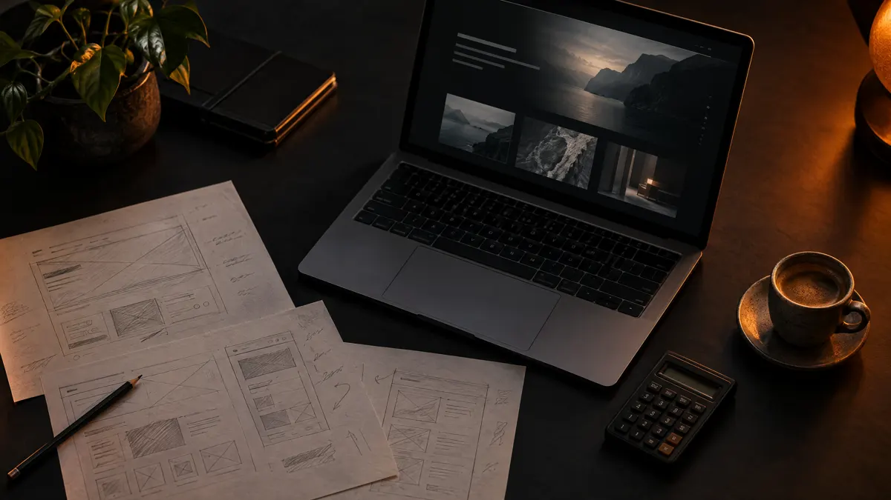

כמה עולה לבנות אתר לעסק ב-2026?
התשובה הקצרה: זה תלוי במה שהעסק צריך. התשובה המועילה: מה בדיוק משפיע על המחיר, מה אמור להיות כלול בכל אתר, ומה כדאי לבדוק לפני שמשלמים.

בקצרה: דף נחיתה הוא האפשרות הקטנה והמהירה ביותר. אתר תדמית של כמה עמודים דורש יותר עבודה, וחנות אינטרנטית או אתר עם מערכת מיוחדת הם הפרויקטים הגדולים ביותר. מה שקובע את המחיר הוא היקף העבודה, רמת העיצוב והמערכות שצריך.
מעבר למחיר הבנייה, יש עלויות שנתיות של דומיין ואחסון, ולפעמים תחזוקה חודשית. המחיר הנכון הוא זה שמחזיר את עצמו בפניות, לא הזול ביותר.
למה כל אחד אומר לכם מחיר אחר
כששואלים חמישה אנשים כמה עולה אתר, מקבלים חמש תשובות. הסיבה פשוטה: "אתר" זו מילה אחת שמתארת דברים שונים לגמרי. דף אחד עם כפתור וואטסאפ הוא אתר. גם חנות עם מאות מוצרים, סליקה ומשלוחים היא אתר.
ההבדל במחיר נובע משלושה דברים: כמה עבודה יש באתר, מי עושה אותה, ואיך היא נעשית. תבנית מוכנה שמחליפים בה טקסטים זולה ומהירה. עיצוב שנבנה מאפס סביב העסק שלכם לוקח יותר זמן, ומחזיר יותר.
סוגי אתרים, מהקטן לגדול
הטבלה הבאה מסדרת את סוגי האתרים לפי היקף העבודה. ככל שיורדים בטבלה, יש יותר עבודה, ולכן גם המחיר עולה.
| סוג האתר | היקף העבודה | זמן עבודה |
|---|---|---|
| בנייה עצמית בוויקס או בפלטפורמה דומה | מנוי חודשי, והעבודה עליכם | הזמן שלכם |
| דף נחיתה מעוצב | עמוד אחד עם מטרה אחת | שבוע עד שבועיים |
| אתר תדמית, 5 עד 8 עמודים | כמה עמודים, עיצוב ותוכן לכל אחד | שבועיים עד חודש |
| חנות אינטרנטית | מוצרים, סליקה, משלוחים וניהול | חודש ומעלה |
| אתר עם מערכת מיוחדת (תורים, פורטל, תלת־ממד) | פיתוח מותאם | לפי ההיקף |
בנייה עצמית
הכי זול בתשלום, הכי יקר בזמן. אתם מקבלים תבנית שאלפי עסקים אחרים משתמשים בה, ואתם אחראים לעיצוב, לטקסטים, למהירות ולגוגל. זה מתאים לעסק שרק מתחיל ובודק כיוון. זה פחות מתאים לעסק שרוצה שהאתר יביא לקוחות.
דף נחיתה
דף אחד, מטרה אחת: שמי שנכנס יבין תוך שניות מה אתם עושים וישאיר פרטים או ישלח הודעה. מתאים לעצמאים, להשקה של מוצר ולקמפיינים ממומנים. כתבתי על זה יותר בעמוד דף נחיתה.
אתר תדמית
זה מה שרוב העסקים צריכים: דף בית, שירותים, עבודות, אודות ויצירת קשר. כאן ההבדל בין אתר זול לאתר טוב מורגש הכי הרבה, כי זה האתר שלקוחות משווים בינו לבין המתחרים.
חנות אינטרנטית
מחיר החנות תלוי בכמות המוצרים, בסליקה, במשלוחים ובחיבור למלאי ולחשבוניות. חנות קטנה עם עשרות מוצרים שונה מאוד מחנות עם אלפי מוצרים ווריאציות.
מה מעלה את המחיר, ומה לא אמור להעלות אותו
דברים שבאמת מעלים מחיר:
- עיצוב אישי מאפס במקום תבנית
- מספר העמודים וכמות התוכן
- מערכות מיוחדות: זימון תורים, הצעות מחיר, אזור לקוחות
- שתי שפות ויותר
- הפקת תמונות, סרטונים או תלת־ממד
- כתיבת כל התוכן על ידי קופירייטר
דברים שלא אמורים לעלות תוספת:
- התאמה לטלפון. ב-2026 זה בסיס, לא תוספת
- מהירות טעינה סבירה
- תעודת אבטחה (המנעול ליד הכתובת)
- הגדרות בסיסיות לגוגל: כותרות, תיאורים ומפת אתר
- כפתור וואטסאפ וטופס פנייה
אם מישהו מציע לכם "התאמה למובייל" כתוספת בתשלום, זה סימן שכדאי לשאול עוד שאלות.
עלויות שממשיכות אחרי שהאתר עולה
המחיר של בניית האתר הוא לא הסוף. כדאי לדעת מראש על העלויות הקבועות:
- דומיין: תשלום שנתי קטן. חשוב שיהיה רשום על שמכם.
- אחסון: באתרים סטטיים קטנים הוא יכול להיות כמעט בחינם, ובאתרים גדולים יותר זה תשלום שנתי.
- מייל עסקי: תשלום חודשי לכל תיבה, אם רוצים כתובת על הדומיין שלכם.
- תחזוקה: לא חובה, אבל חוסכת כאב ראש. המחיר תלוי במה שכלול: גיבויים, עדכונים, שינויים ודוחות.
איך נקבע המחיר אצלי
אצלי אין מחירון קבוע. כל פרויקט מתומחר לפי מה שהעסק צריך: כמה עמודים, אילו מערכות, ואיזו רמת עיצוב ותנועה. יש שלוש חבילות שעוזרות להבין את ההיקף:
| חבילה | למי זה מתאים |
|---|---|
| נוכחות | דף נחיתה אחד, באוויר תוך שבוע |
| עסק | אתר מלא עד 8 עמודים, עם ניהול תוכן וקידום בסיסי |
| חתימה | אתר דגל עם תלת־ממד, חנות או מערכת, בשתי שפות |
אפשר להוסיף מערכות לפי הצורך, למשל חנות אינטרנטית או זימון תורים. אחרי שיחת היכרות מקבלים הצעה כתובה עם מחיר סגור, ומה שכתוב בה זה מה שמשלמים. את כל הפרטים אפשר לראות בעמוד בניית אתרים.
איך לא לשלם פעמיים
הטעות היקרה ביותר היא לא לבחור במחיר הגבוה, אלא לבנות אתר שצריך לבנות מחדש אחרי שנה. כמה דברים שכדאי לבדוק לפני שחותמים:
- על שם מי הדומיין והאתר? הם צריכים להיות שלכם, לא של מי שבנה.
- האם אפשר לעדכן לבד? טקסטים, תמונות ומחירים, בלי לחכות לאף אחד.
- מה המהירות בטלפון? בקשו לראות אתרים קודמים ובדקו אותם בטלפון שלכם.
- מה קורה עם גוגל? אם עוברים מאתר ישן, צריך לשמור על הכתובות הקיימות, אחרת מאבדים את הדירוג.
- מה כלול בהצעה ומה לא? הצעה טובה מפרטת את מספר העמודים, את סבבי התיקונים ואת לוח הזמנים.
שאלות נפוצות
כמה עולה אתר תדמית לעסק קטן?
זה תלוי במספר העמודים, ברמת העיצוב ובמערכות שצריך. אתר שנבנה על תבנית יהיה זול יותר, ואתר בעיצוב אישי מאפס יעלה יותר, אבל ייראה ייחודי ויעבוד טוב יותר. הדרך הכי טובה לדעת היא לבקש הצעה כתובה עם מחיר סגור.
מה ההבדל בין דף נחיתה לאתר?
דף נחיתה הוא עמוד אחד עם מטרה אחת, בדרך כלל להשאיר פרטים. אתר כולל כמה עמודים ומציג את כל העסק. הרבה עסקים מתחילים בדף נחיתה ומרחיבים לאתר מלא בהמשך.
למה לא לבנות לבד בוויקס?
אפשר, וזה זול בתשלום. אבל מקבלים תבנית שעסקים רבים משתמשים בה, ואתם אחראים לעיצוב, לטקסטים ולגוגל. אם האתר אמור להביא לקוחות, ההשקעה בבנייה מקצועית מחזירה את עצמה בדרך כלל מהר.
כמה זמן לוקח לבנות אתר?
דף נחיתה לוקח בדרך כלל עד שבוע. אתר תדמית לוקח בין שבועיים לחודש. מה שהכי מעכב הוא בדרך כלל התוכן, ולכן כדאי להכין טקסטים ותמונות מראש.
האם המחיר כולל קידום בגוגל?
תלוי בהצעה. הגדרות בסיסיות לגוגל צריכות להיות כלולות בכל אתר. קידום אורגני שוטף, כמו כתיבת תוכן ושיפור מקום בתוצאות, הוא בדרך כלל שירות נפרד.